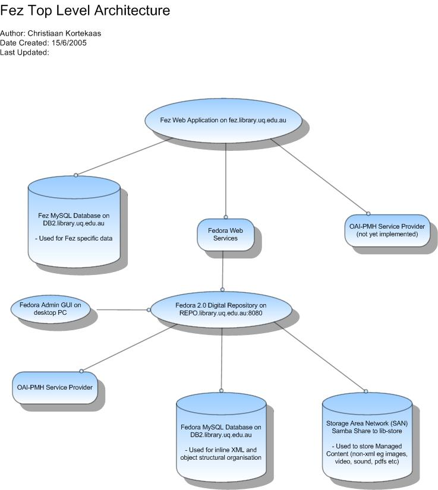
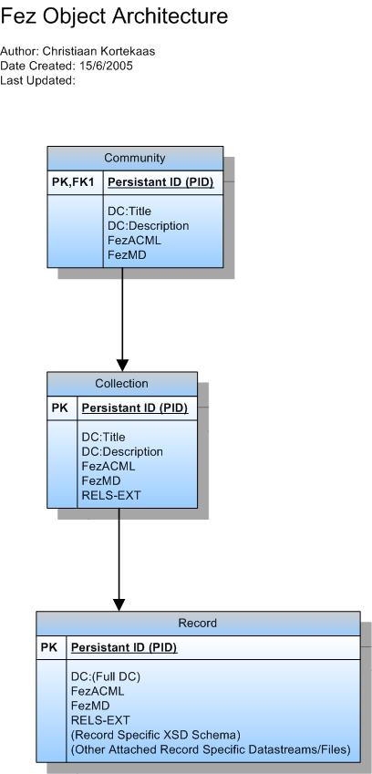

| Project: | Fez |
|---|---|
| Internal Release Number: | 1.2.0 Beta |
| Attached Worksheets: |
Design > Architecture Worksheet
Design > User Interface Worksheet
Design > Persistent Storage Worksheet
Design > Security Worksheet
|
| Related Documents: |
The system's structural design is described in the following UML structural diagrams:

